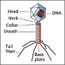

В связи с резко возросшей за последние десятилетия антибиотикорезистентностью учёные обратили внимание на незаслуженно забытую группу препаратов - бактериофаги (вирусы, поражающие бактерии). И антибиотики, и фаги воздействуют непосредственно на бактерии, но антибиотики подавляют не только патогенную, но и нормальную микрофлору, нарушая естественный баланс, в то время как бактериофаги воздействуют исключительно на патогенные микроорганизмы.
Сталкиваясь с заболеваниями, вызванными патогенными микроорганизмами, любой врач должен решить для себя вопрос, какому лекарству отдать предпочтение. Общераспространённой практикой является назначение таким пациентам антибиотиков. Однако, в связи с резко возросшей за последние десятилетия антибиотикорезистентностью, учёные обратили внимание на незаслуженно забытую группу препаратов - бактериофаги. Бактериофаги - это вирусы, поражающие бактерии. И антибиотики, и фаги воздействуют непосредственно на бактерии, но антибиотики подавляют не только патогенную, но и нормальную микрофлору, нарушая естественный баланс, в то время как бактериофаги воздействуют исключительно на патогенные микроорганизмы.
Механизм действия бактериофагов заключается в проникновении в клетки определённых, строго специфичных бактерий и взаимодействии с их геномом, что приводит к лизогенному или литическому эффекту, в зависимости от природы фага и от окружающих условий. При литическом типе инфекции бактериофаги, поразив бактерию, немедленно начинают размножаться, быстро разрушая бактериальную клетку. При лизогенном типе взаимодействия геном фага интегрируется в бактериальный геном и передается из поколения в поколение, причём, время от времени в некотором количестве клеток синтезируются вирионы, лизирующие эти клетки и выходящие затем во внешнюю среду. Такие фаги называются умеренными, а фаги, вызывающие литический эффект - вирулентными. В отдельных случаях, при освобождении из генома бактериальной клетки, умеренные фаги могут захватывать с собой бактериальные гены и передавать их другим бактериям при инфицировании. Иногда такая фаговая передача генов, например кодирующих факторы вирулентности, может приводить к трансформации непатогенных бактерий в патогенные. Кроме того, фаги могут переносить гены резистентности к антибиотикам.
Первые сообщения о бактериофагах появились более 100 лет назад, а первый известный науке отчет об успешной фаготерапии был сделан в 1921 году Брийонгом и Майсином, они использовали стафилококковый бактериофаг для лечения инфекций кожи.
В настоящее время препараты бактериофагов применяются при инфекционных заболеваниях желудочно-кишечного тракта, органов мочеполовой системы, систем органов кровообращения, дыхания, опорно-двигательного аппарата, гнойно-септических заболеваниях новорожденных, а также при других заболеваниях, вызванных возбудителями рода Klebsiella, Escherichiae, Proteus, Pseudomonas, Staphylococcus, Streptococcus.
Активно изучаются новые пути терапии, одним из которых является лечение инфекций не живыми фагами, а использование ферментов, лизирующих бактерии. Действие ферментов, как и фагов, строго специфично. Предполагается использовать их в виде назального спрея. Кроме того, разрабатываются средства личной гигиены (зубная паста), а также продукты питания (йогурт), содержащие бактериофаги. Такое применение бактериофагов направлено на снижение колонизации патогенными микроорганизмами и отвечает концепции профилактической медицины.
Thacker P.D.
Set a Microbe to Kill a Microbe.
JAMA 2003; 290 (24): 3183-5.